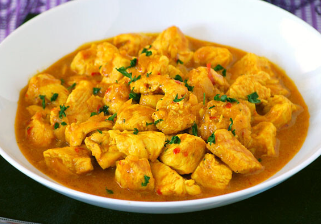

Recipe 4

Description
This is the fourth recipe. It is delicious and easy to make!
Ingredients:
- 2 pechugas pequeñas de pollo troceadas
- 1 cebolleta pequeña picada
- 1 diente de ajo picado
- 1 trocito de jengibre fresco pelado rallado
- 1 cucharadita de curry molido
- 1/2 cucharadita de cúrcuma
- 1/2 cucharadita de comino molido
- 45 ml de tomate triturado o salsa de tomate
- 1 pizca de sal
- 1 pizca de pimienta negra molida
- 200 ml de leche de coco
- aceite de oliva
- cilantro fresco
Instructions
- Heat the olive oil in a large pan over medium heat.
- Add the chicken pieces and cook until golden brown on all sides.
- Add the onion, garlic, and ginger. Cook for 2 minutes.
- Add the curry powder, turmeric, and cumin. Cook for 1 minute.
- Add the tomato sauce and coconut milk. Bring to a boil.
- Reduce heat and simmer for 20 minutes.
- Season with salt and black pepper to taste.
- Garnish with fresh cilantro before serving.
Back to Home